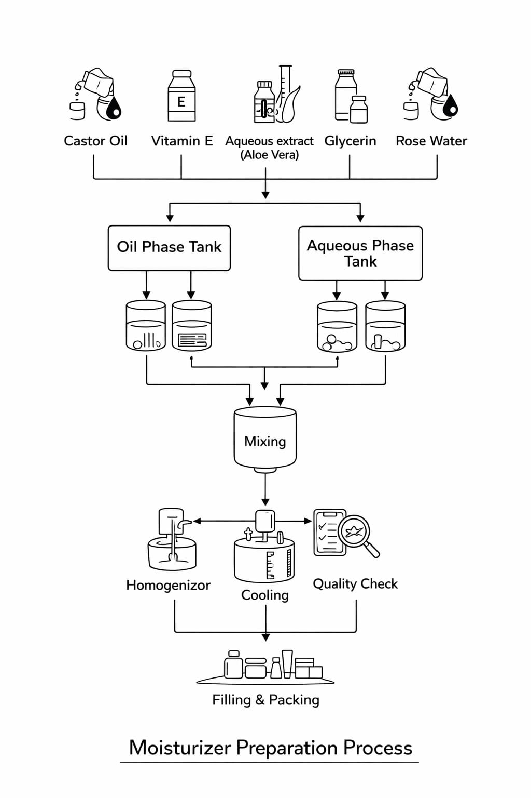

<!DOCTYPE html>
<html lang="en">
<head>
    <meta charset="UTF-8">
    <meta name="viewport" content="width=device-width, initial-scale=1.0">
    <link rel="stylesheet" href="style.css">
</head>
<body>
    
</body>
</html>
<header class="navbar">
    <div class="logo">
        🌿 <span>HerbaCream</span>
        <small>Chemical Prototyping</small>
    </div>

    <nav>
        <a href="index.html">Home</a>
        <a href="team.html">Team</a>
        <a href="ingredients.html">Ingredients</a>
        <a href="procedure.html">Procedure</a>
        <a href="process.html">Process</a>
        <a href="gallery.html">Gallery</a>
        <a href="video.html">Video</a>
        <a href="application.html">Application</a>
    </nav>
</header>

<hr class="divider">
<body>
    <!-- PROCEDURE SECTION -->
<section id="procedure" class="procedure-section">
    <h2>Preparation Procedure</h2>
    <p class="procedure-sub">
        Step-by-step laboratory procedure for formulating the herbal moisturizer cream.
    </p>

    <div class="procedure-layout">
        
        <!-- RIGHT TIMELINE -->
        <div class="procedure-timeline">
            <div class="step">
                <div class="icon">✓</div>
                <div class="content">
                    <h3>Step 1: Aloe Vera Preparation</h3>
                    <p>Extract fresh aloe vera gel and strain it to remove any lumps or impurities.</p>
                </div>
            </div>

            <div class="step">
                <div class="icon">✓</div>
                <div class="content">
                    <h3>Step 2: Oil Blending</h3>
                    <p>Combine coconut or almond oil with vitamin E oil and mix thoroughly.</p>
                </div>
            </div>

            <div class="step">
                <div class="icon">✓</div>
                <div class="content">
                    <h3>Step 3: Aloe Integration</h3>
                    <p>
                        Slowly add the aloe vera gel into the oil mixture while stirring continuously.
                    </p>
                </div>
            </div>

            <div class="step">
                <div class="icon">✓</div>
                <div class="content">
                    <h3>Step 4: Hydration Boost</h3>
                    <p>
                    Pour in rose water and glycerin to enhance moisture and texture.
                    </p>
                </div>
            </div>

            <div class="step">
                <div class="icon">✓</div>
                <div class="content">
                    <h3>Step 5: Fragrance Addition</h3>
                    <p>
                    Add a few drops of essential oil and stir until fully blended.
                    </p>    
                </div>
            </div>
            <div class="step">
                <div class="icon">✓</div>
                <div class="content">
                    <h3>Step 6: Final Packaging</h3>
                    <p>
                    Transfer the finished cream into sterilized containers and allow it
                    to set at room temperature before sealing.
                    </p>    
                </div>
            </div>
            

        </div>
       <div class="procedure-image">
            
        </div>
    </div>
    </section>

</body>

